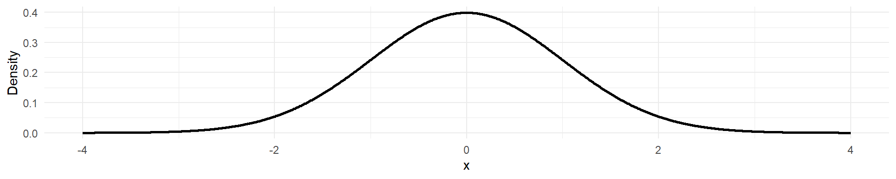
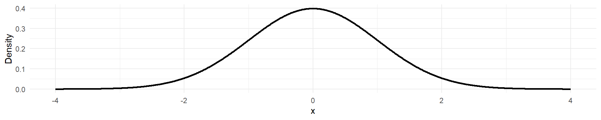

在一次政治选举中，地区A和地区B的选民分别占总选民的60%和40%。已知在地区A中，有5%的选票被判定为无效票；而在地区B中，有8%的选票被判定为无效票。现在，随机抽取一张被判定为无效的选票，求这张无效票来自地区B的概率是多少？
\[ P(B|\text{无效票}) = \frac{P(\text{无效票}|B)P(B)}{P(\text{无效票}|A)P(A) + P(\text{无效票}|B)P(B)} \]
\[ \begin{aligned} P(\text{无效票}) &= P(\text{无效票}|A)P(A) + P(\text{无效票}|B)P(B) \\ &= (0.05 \times 0.6) + (0.08 \times 0.4) \\ &= 0.03 + 0.032 \\ &= 0.062 \end{aligned} \]
\[ \begin{aligned} P(B|\text{无效票}) &= \frac{P(\text{无效票}|B)P(B)}{P(\text{无效票})} \\ &= \frac{0.08 \times 0.4}{0.062} \\ &= \frac{0.032}{0.062} \\ &\approx 0.5161 \end{aligned} \]
尽管地区 B 的选民人数较少，但其无效票率较高，因此在所有无效票中，无效票来自地区 B 的概率超过了 50%。这表明在选举分析中，需要重点关注不同地区的投票行为差异，以准确评估选举结果。
在一项政策支持度调查中，已知男性和女性对某项新政策的支持率分别为40%和50%，且总体的支持率为45%。请问，你能否判断性别与对该政策的支持是否为独立事件？
\[ P(A \cap B) = P(A) \times P(B) \]
其中，A表示“支持该政策”，B表示“性别为男性”。
\[ \begin{aligned} P(\text{支持}) &= P(\text{支持}| \text{男性})P(\text{男性}) + P(\text{支持}| \text{女性})P(\text{女性}) \\ 0.45 &= 0.4p + 0.5(1 - p) \\ 0.45 &= 0.4p + 0.5 - 0.5p \\ 0.45 &= 0.5 - 0.1p \\ 0.1p &= 0.5 - 0.45 \\ p &= \frac{0.05}{0.1} = 0.5 \end{aligned} \]
\[ P(\text{支持} \cap \text{男性}) = P(\text{支持}| \text{男性})P(\text{男性}) = 0.4 \times 0.5 = 0.20 \]
\[ P(\text{支持}) \times P(\text{男性}) = 0.45 \times 0.5 = 0.225 \]
因为\(P(\text{支持} \cap \text{男性}) = 0.20 \neq 0.225 = P(\text{支持}) \times P(\text{男性})\)，所以事件“支持该政策”和“性别为男性”不是独立事件。
性别对政策支持度有显著影响。男性的支持率低于总体支持率，而女性的支持率高于总体支持率。因此，在制定政策宣传策略时，需要考虑性别因素，以提高政策的接受度。
《解密》是2024年上映的中国大陆悬疑剧情片，改编自茅盾文学奖得主麦家的同名长篇小说。 该片根据麦家的同名小说改编，以20世纪40年代为背景，讲述拥有数学天赋却孤僻脆弱的容金珍为密码破译事业倾尽所有的故事，展现了上世纪数学奇才容金珍的传奇人生，他因卓越才华被神秘组织701选中，由此踏入了一场扣人心弦的中美密码对决的漩涡。
他想用这个概念来说明什么？请解释其内在逻辑。(5’)
PDF of A Standard Normal Distribution

他是否正确使用了“正态分布”的概念来为其观点提供支持？为什么？(5’)
As the majority of you eagerly request,
this is a CLOSED-BOOK quiz~~~🎉🎉🎉🎉
Where’s your pen?
Where’s your mind?
Arrrrrre you ready?
一位社会科学家正在研究公民教育水平与他们对安乐死的支持之间的关系。ta应选择哪种关联统计量来分析这两者之间的关系？请说明选择理由。
答案及评分标准
在研究政府响应速度与居民满意度的关系时，一位政治科学家选择 Kendall’s τ 的选择正确吗？如果正确，那么 Kendall’s τ 根据什么分布进行统计推断、判断结果显著性；如果不正确，请阐述理由并给出正确的统计
答案及评分标准